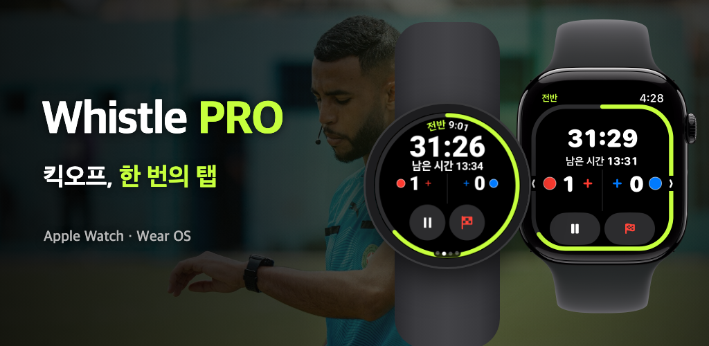

Whistle PRO
워치만 차고 경기장에 나가세요.
축구 심판을 위한 Apple Watch·Wear OS 경기 타이머와 기록.

워치만 차고 경기장에 나가세요.
축구 심판을 위한 Apple Watch·Wear OS 경기 타이머와 기록.

조기축구, 동호회, 유소년 리그까지. 폰 없이 워치 하나로 경기 전체가 돌아갑니다.
뛰면서 워치 버튼과 크라운·베젤로 중단·재개, 골, 실행 취소를 할 수 있습니다(PRO). Apple Watch와 갤럭시 워치 등 Wear OS 워치에서.
전·후반, 쿼터제, 연장전, 승부차기까지. 중단 시간을 따로 재서 권장 추가시간을 보여줍니다.
종료 직전, 하프타임 종료, 일시 퇴장 복귀 시점을 손목 진동으로 알려줍니다.
골, 경고, 퇴장, 교체를 팀·등번호와 함께 기록합니다. 경고 2회는 자동으로 퇴장 처리합니다.
FIFA 표준을 기본으로, 경기 시간·인원·교체 한도·일시 퇴장까지 바꿔 프리셋으로 저장하세요.
심박수, 이동 거리, 스프린트, 이동 히트맵을 경기 기록과 함께 남기고 건강 앱(iPhone)이나 Health Connect(Android)에 운동으로 저장합니다.
경기가 끝나면 휴대폰에서 득점·카드·교체와 적용 규칙이 정리된 보고서를 바로 공유할 수 있습니다.
경기 상세 [지도] 탭에서 경기장 네 모서리를 맞추면 위성 사진 위에 내 이동 히트맵이 보입니다.
경기장을 맞춘 경기는 내 움직임을 15초 리플레이 영상으로 만들어 SNS에 바로 올릴 수 있습니다.
킥오프 전에 워치에서 두 팀 유니폼 색을 고르고, 경기가 끝난 뒤 휴대폰에서도 고칠 수 있습니다.
경기 운영에 꼭 필요한 기능은 무료로, 기록과 분석은 PRO로.
₩0
월 ₩3,300 · 연 ₩22,000 · 7일 무료 체험
구독은 휴대폰 앱에서 할 수 있으며, App Store 또는 Google Play 계정 설정에서 언제든 해지할 수 있습니다.
계정도, 서버도 없습니다. 경기 기록과 건강 데이터는 내 워치와 휴대폰 사이에서만 오갑니다.
개인정보처리방침 보기